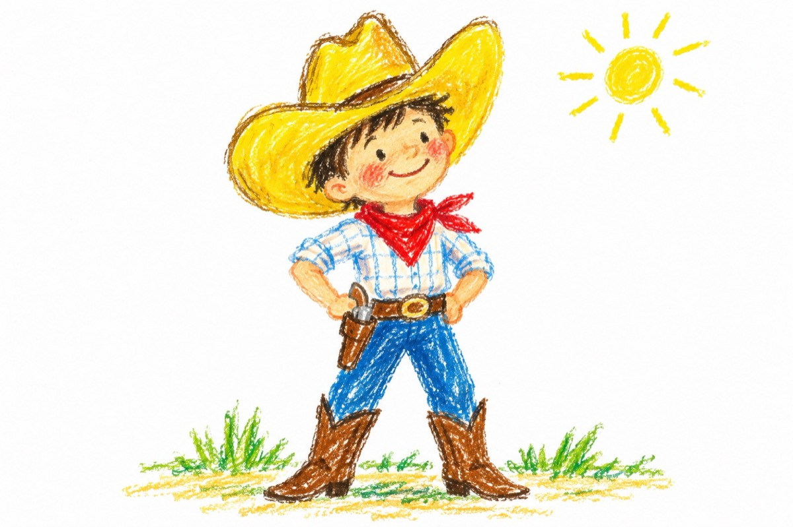

Cowboyul
Eu sunt micuțul cowboy
Nici tu cal, nici tu preerie,
Nici tu vaci și nici tu boi
În schimb am o pălărie
Și-o dorință de ,,război”!
Eu sunt micuțul cowboy
Am pistol, am și ciocate
Nu sunt nici cioban la oi
Dar știu să le fac pe toate.
Sunt cowboyul cel vestit
Pistolarul iscusit,
Din două gloanțe poc, poc,
Găuresc orice cojoc!
Fiți atenți eu nu mă joc!...
Vasile Groza
Apare și în: Poezii cu animale.